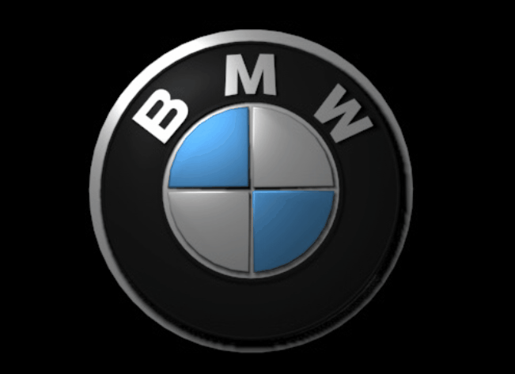

BMW OPIS
BMW– niemiecki koncern motoryzacyjny produkujący od 1916 roku samochody osobowe, motocykle, skutery oraz silnik.Koncern BMW jako swoich założycieli podaje dwie osoby: Gustava Otto i Karla Rappa, którzy w Monachium na początku XX wieku niezależnie od siebie rozpoczęli działalność gospodarczą w dziedzinie lotnictwa. Znaczny udział w kształtowaniu przedsiębiorstwa i późniejsze jej sukcesy należy przypisać osobom: Francowi Josefowi Poppowi – pierwszemu dyrektorowi naczelnemu, Maxowi Frizowi – głównemu konstruktorowi i dyrektorowi technicznemu oraz Camillo Castiglioniemu – akcjonariuszowi i właścicielowi przedsiębiorstwa.Logo przedsiębiorstwa BMW, które pozostało niezmienione do czasów współczesnych, przedstawia stylizowany krąg śmigła w barwach Bawarii, łączy lotnicze korzenie przedsiębiorstwa z alpejskim landem.
